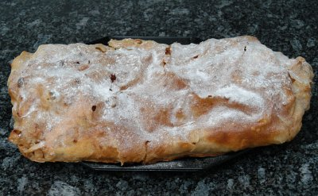

| Zutaten für 15 Personen: | |
| 250 g | Mehl |
| 1.4 dl | Wasser lau |
| 1.5 EL | Öl |
| 1/2 TL | Salz |
| Butter | |
| 50 g | Mandelsplitter |
| 200 g | Brösmeli oder Paniermehl |
| 100 g | Sultaninen |
| 1.5 kg | Äpfel |
| 120 g | Zucker und Puderzucker |
| Zimt | |
Das Mehl mit dem Salzwasser anrühren, das Öl beigeben und einen geschmeidigen Teig zubereiten. Kneten und den Teig etwa 1 Stunde ruhen lassen.
Die Brösmeli in Butter andünsten und auskühlen lassen.
Äpfel rüsten und in kleine Schnitze schneiden.
Den Teig hauchdünn auswallen, zuletzt über dem Handrücken ausziehen und auf ein bemehltes Küchentuch legen. Die ganze Teigfläche mit flüssiger schwach gebräunter Butter bestreichen.
Mandelsplitter, Brösmeli, Sultaninen, Äpfel und Zucker darauf verteilen. Mit Zimt bestäuben.
Die Teigränder einschlagen und den Strudel mit Hilfe des Tuches aufrollen. Auf das gefettete Blech geben und bei guter Hitze (180°C) 40 bis 50 Minuten backen. Während der Backzeit öfter mit flüssiger Butter bestreichen.
Vor dem Servieren mit Puderzucker bestreuen.
Variante: Helmut Schabetsberger aus Deutschland empfiehlt gemäss Österreichischer Grossmutter statt Äpfeln Heidelbeeren und statt Wasser Milch zu verwenden. Das gibt dann einen Heidelbeerstrudel, der am besten warm genossen werden soll. 14.9.2001
Gerhard Kierner via Herbert Eigenmann. Code: AAD
Durch Herbert getestet. Als Mehl verwendete er sogenanntes Zopfmehl. Die Verarbeitung habe tadellos funktioniert. Das Resultat war überzeugend.
Am 13.8.2008 durch RE zubereitet: Das gibt ja riesige Mengen! Die Teigherstellung ist nicht so mein Ding. Die fertigen Strudelteigblätter sind definitiv vorzuziehen! Hat ganz gut geschmeckt und wurde innerhalb eines Vormittags von meinen Arbeitskollegen weggeputzt mit positiven Kommentaren.
@LINKBACK_TAG@ @WAKELOCK@